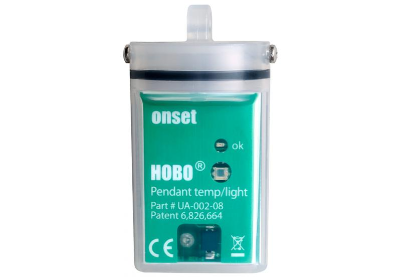
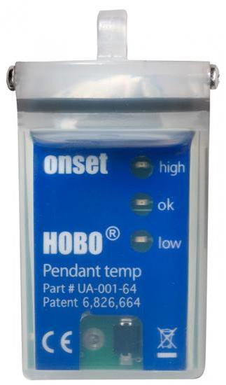
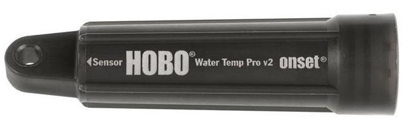
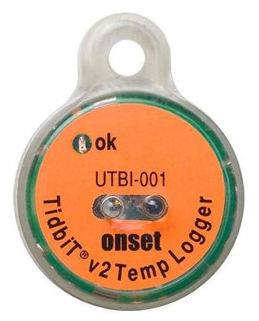
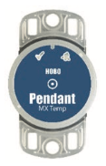
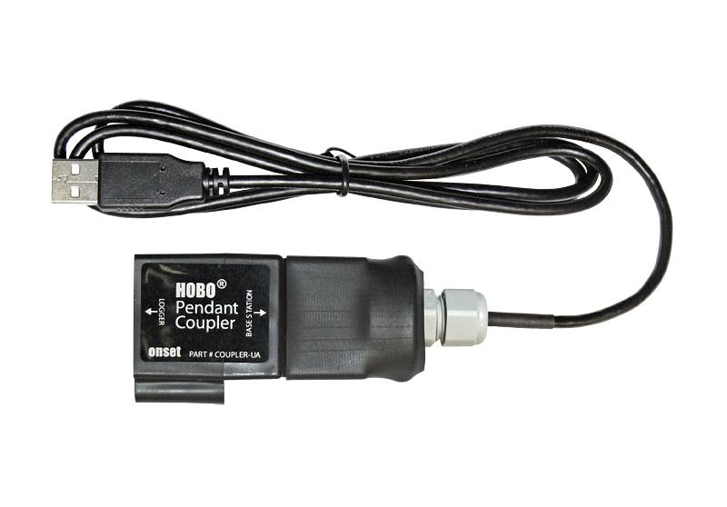
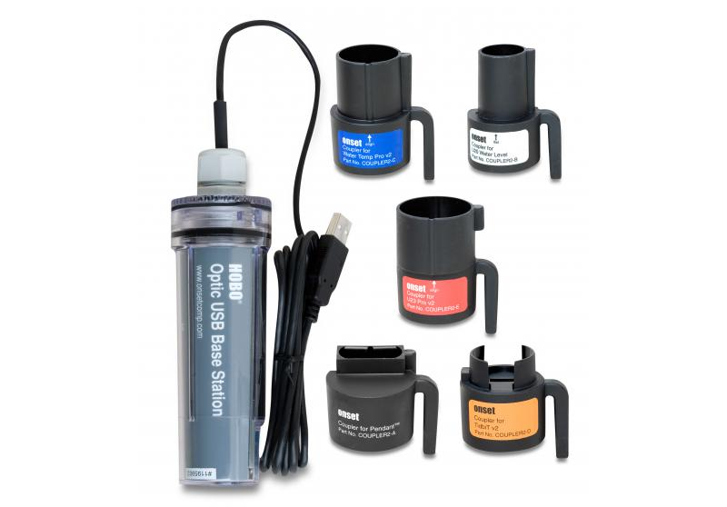
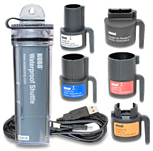
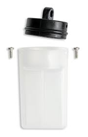
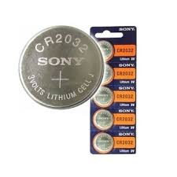

Chapitre 2 Acquisition des données
2.1 Recommandations générales
Cette première partie du guide doit être lue comme une proposition d’organisation chronologie de chaque étape à accomplir pour l’acquisition de données de terrain : avant (section 2.2.1), pendant (section 2.2.2) et après (section 2.2.3) les relèves. Dans chacune de ces parties se trouvent des renvois vers les détails de chaque procédure. Il faut ensuite revenir au point qui était en cours de traitement pour ne pas oublier d’étape.
De manière générale, il semble qu’un certain nombre de difficultés puissent être évitées en suivant quelques recommandations assez simples :
- Travailler le plus possible avec toujours le même ordinateur, afin d’éviter les mélanges de réglage d’horloge.
- Bien veiller à synchroniser l’horloge de la navette avec celle de l’ordinateur, afin d’éviter les mélanges de réglage d’horloge.
- Ne pas hésiter à changer les piles régulièrement (des capteurs comme de la navette), afin qu’elles aient toujours un niveau supérieur à 50 ou 60 %. Il vaut mieux changer une pile que perdre plusieurs mois de données et le travail associé.
2.2 Aide-mémoire chronologique
2.2.1 Avant
- Vérifier que le matériel nécessaire est prêt et disponible (voir liste globale en 2.4.1) :
- Charger l’ordinateur et le GPS
- Vérifier s’il reste des tubes de protection et des lests d’avance
- Lancer des sondes à l’avance (voir section 2.5.2)
- Vérifier si l’horloge de la navette est bien synchronisée et les piles ok (voir section 2.5.5)
- Imprimer la dernière version de l’atlas
- Imprimer le dernier état des stations, avec notamment les tâches à réaliser
- Faire le point sur les opérations notées à réaliser sur chaque station à partir de la tournée précédente et préparer le matériel nécessaire en fonction
- Vérifier les débits (http://www.rdbrmc.com/hydroreel2/listestation.php?dep=39)
2.2.2 Pendant
- Calendrier :
- Si deux tournées annuelles : au cours des mois d’avril et d’octobre
- Si trois tournées annuelles : au cours des mois de février-mars, de mai-juin et d’octobre
- Tournée à organiser géographiquement en fonction de l’atlas
- Au niveau de chaque station :
- Localiser la sonde
- Placer le thermomètre manuel
- Nettoyer la sonde en place
- La brancher dans la navette et faire le transfert (voir section 2.5.6)
- Noter sur le cahier de suivi la station (selon le code de l’atlas), la date, l’heure, les mesures manuelles de température et de hauteur d’eau entre la surface et le capteur, l’opérateur, etc.
- Noter les éventuelles corrections à apporter sur l’atlas
2.2.3 Après
- Traitement des données :
- Saisies des données de description des stations (si installation de nouvelles stations) (voir section 2.3.1)
- Scan/photocopie du cahier de suivi pour les dernières opérations et transmission
- Saisie des données de suivi des stations (voir section 2.3.2)
- Vidange des données de la navette (voir section 2.5.7) et/ou des sondes défectueuses
- Transmission des fichiers (voir section 2.3.4)
- Arrêter les sondes non utilisées (voir section 2.5.4)
- Remettre le matériel en état (changement des piles, des boîtiers, etc.)
- Commander le matériel manquant pour la prochaine tournée.
2.3 Saisie
L’objectif de ce chapitre est de préciser les formats de saisie des informations au sein des champs contenus dans les fichiers “modèles” de rendu des données. L’objectif est que tous les acteurs travaillent avec ces mêmes formats, facilitant alors le stockage, la transmission et le traitement de ces résultats.
Une première partie traite des données relatives aux stations, puis celles relatives aux suivis de terrain et aux éventuels commentaires annuels des chroniques, puis enfin les différents fichiers à transmettre suite à une campagne de terrain.
2.3.1 Saisie des caractéristiques des stations
- Complément sur le terrain des informations de la station sur la fiche :
Station/Fiche_pose_sonde_thermique_simple.pdf - Saisie des informations de terrain concernant les stations dans le fichier :
Station/2018-10-30_Modele_saisie_stations_V3.xlsx(ouStations_thermie_avec_champs_complémentaires.xlsxpour les collectivités extérieures au département et souhaitant générer les fiches atlas de résultats, avec complément des champs adéquats : chsta_distancesource, chsta_typetheorique, chsta_altitude, chsta_codecontextepdpg) - Complément des différents champs :
- chsta_coderhj : code d’identification de la station propre au RSTMAJ. Laisser vide
- chsta_codemo : code d’identification de la station propre à chaque maître d’ouvrage
- chsta_codesie : si la station possède un code dans le SIE de l’AERMC
- chsta_mo : Nom du maître d’ouvrage : “OFB”, “CCPM”, “CCVA”, “CD39_CR_Ain”, “CD39_RDM”, “DREAL”, “FJPPMA”, “PNRHJ”, “SMISA”
- chsta_milieu : Nom de l’écosystème (cours d’eau ou plan d’eau)
- chsta_coord_x et chsta_coord_y : Coordonnées précises de la sonde en Lambert 93
- chsta_fonctionnement : “En cours” ou “Arrêté”
- chsta_transmission : “Oui” si télétransmission, sinon “Non”
- chsta_suivithermie : “Oui”
- chsta_reseauthermietype : “Patrimonial” ou “Opérationnel”
- chsta_suivipiezo : “Non”
- chsta_suivihydro : “Non”
- chsta_suivio2 : “Non”
- chsta_suivipluvio : “Non”
- chsta_largeurlitmineur : largeur du lit mineur, en mètres
- chsta_largeurlitetiage : largeur du lit d’étiage, en mètres
- chsta_rive : rive d’ancrage de la sonde (RD, RG)
- chsta_ancrage : support d’ancrage de la sonde
- chsta_acces : modalités d’accès au secteur
- chsta_detailsloc : détails de localisation
- chsta_description : description du dispositif, si nécessaire
- chsta_ordretournee : position dans l’ordre de la tournée de relève du maître d’ouvrage, si nécessaire
- chsta_impacts : présence d’impacts potentiels sur la thermie (étang/seuil à l’amont, etc.)
- chsta_profsonde : profondeur d’eau sous la sonde à l’étiage, en mètres
- chsta_substrats : substrat en présence sous la sonde (FIN, GAL, GRA, etc.)
- chsta_distberge : distance à la berge, en mètres
- chsta_numphoto : Nom du fichier de la photographie de l’emplacement de la sonde, annoté si besoin
- chsta_zcapteur : Laisser vide
- chsta_zbouchon : Laisser vide
- chsta_typez : Laisser vide
- chsta_hcapteurbouchon : Laisser vide
- chsta_remarques : éventuelles remarques sur la station
2.3.2 Saisie des suivis de relève
- Afin de constituer un “cahier de terrain”, impression et reliure de :
Suivi/2017-11-20_Cahier_terrain_V7.pdf - Saisie des informations de suivi de terrain dans le fichier excel :
Suivi/2018-10-30_Saisie_cahier_terrain_V8.xlsx - Créer deux lignes en cas de remplacement d’une sonde : une ligne avec l’ancien numéro de sonde, une avec le nouveau, toutes les autres données étant identiques.
- Dans le cas d’une sonde disparue, bien compléter le numéro de sonde en allant vérifier celui noté lors de la dernière relève
- Complément des différents champs :
- chsvi_mo : Nom du maître d’ouvrage
- chsvi_operateurs : nom des opérateurs le jour de l’intervention
- chsvi_coderhj : code de la station fourni par le RSTMAJ. Pas d’espace : tous les caractères doivent être accolés.
- chsvi_date : date de l’intervention, format 2015-10-07 pour le 7 octobre 2015
- chsvi_heure : heure d’intervention, format 09:35:00
- chsvi_capteur : numéro du capteur
- chsvi_valeur : température relevée avec un thermomètre manuel
- chsvi_action : Relève, Pose, Dépose, Disparue (si on effectue un remplacement, saisir deux lignes pour la même station : une en dépose avec le numéro du capteur enlevé, une en pose avec le numéro du capteur remis en place, avec les mêmes dates, heures et autres paramètres). Dans le cas d’une sonde disparue, bien compléter le numéro de sonde en allant vérifier celui noté lors de la dernière relève.
- chsvi_fonctionnement : si l’opération s’est bien déroulée ou non
- chsvi_remarques : si des points complémentaires sont à noter
- chsvi_actionafaire : opérations à effectuer lors du prochain passage.
2.3.3 Saisie des commentaires des chroniques
- Saisie des commentaires des chroniques annuelles dans le fichier :
Commentaires/2020-02-06_Saisie_commentaires_chroniques_V1.xlsxafin que celles-ci soient réutilisées pour générer les fiches atlas de résultats.
2.3.4 Envoi des informations de pose et/ou de suivi
Les envois des données relatives aux différentes situations présentées ci-dessous sont à réaliser vers jean-baptiste.fagot@peche-jura.com, directement en pièce jointe au sein d’une archive (.zip, .rar ou autre) ou à travers une plateforme de transfert (Dropbox, WeTransfer, etc).
- Dans le cas de la création de nouvelles stations :
- Scan des fiches de description de terrain (.pdf)
- Fichier de saisie de la description des stations (.xlsx)
- Photographies des stations, avec comme noms de fichiers ceux indiqués dans la colonne “chsta_numphoto” (.png ou .jpg)
- Fichier de saisie des informations de suivi, avec “Pose” dans la colonne “Action” (.xlsx)
- Dans le cas d’un suivi courant :
- Scan des fiches de suivi de terrain (.pdf)
- Fichier de saisie du suivi de terrain (.xlsx)
- Correction à apporter sur l’atlas : scan des pages annotées à la main (.pdf)
- UNIQUEMENT POUR LES COLLECTIVITÉS DANS LE DÉPARTEMENT DU JURA : Fichiers natifs issus des sondes et/ou de la navette (.hobo), nommés selon la formule suivante : “CodeRHJ_Datederelève_NuméroCapteur”, soit par exemple “BIE0-1_2017-10-10_9764347.hobo” si la sonde 9764347 a été relevée le 10 octobre 2017 sur la station BIE0-1.
- UNIQUEMENT POUR LES COLLECTIVITÉS HORS DÉPARTEMENT DU JURA : Fichiers .txt issus des fichiers .hobo cités précédemment (générés à partir de l’exportation décrite en section 2.5.8 et selon les paramétrages décrits en section 2.5.1, et nommés selon la même convention : BIE0-1_2017-10-10_9764347.txt (ou station_année.txt, exemple Combe-lavaux_2016.txt). Il est essentiel que tous les fichiers soient homogènes dans leur nommage et dans leur format de données.
- Dans le cas de l’arrêt d’une station :
- Liste des stations arrêtées.
- Fichiers cités ci-dessus dans le cas d’un suivi courant.
2.4 Matériel
2.4.1 Liste générale de matériel
Cette liste est une liste générale de matériel à emporter sur le terrain afin de réaliser des poses/relèves de sondes.
Localisation
- GPS
- Bombe de peinture
- Appareil photo
- Annuaire de localisation des stations
Installation
- Tube de protection
- Colle pour assemblage des tubes
- Câble inox
- Serre-câbles inox
- Clé à pipe de 7
- Piton inox
- Clé pour piton
- Marteau
- Lests
- Pinces coupantes
- Perforateur
- Télémètre ou décamètre
- Pinces universelles
Gestion
- Navette
- Brosse à dents
- Thermomètre de terrain
- Sondes de remplacement
- Carnet de suivi de terrain des sondes thermiques} + crayon de papier
- Ordinateur + chargeur
- Lecteur USB
- Piles AA pour la navette (2)
- Piles CR2032 pour sondes
- Petit tournevis plat
- Petit tournevis cruciforme
- Capuchons de rechange
- Papier absorbant/torchon pour essuyer
2.4.2 Exemples de références du matériel
Cette section contient les références des principaux matériels utilisés par les opérateurs du département. Il constitue un aide-mémoire et reste néanmoins non-exhaustif.
2.4.2.1 Matériel Hobo
La plupart des maîtres d’ouvrage du département utilisent du matériel de la marque Hobo. Ces produits sont commercialisés en France par le revendeur ProSensor (15 rue de Montvaux 57865 Amanvillers - www.prosensor.com), représenté par Mme Anne Bilourou (03-87-53-37-55 - abilourou@prosensor.com. Les références figurant dans le tableau ci-joint sont données à titre indicatif et doivent être confirmées auprès du fournisseur.
| Référence | Type | Vue | Détails | Prix approximatif |
|---|---|---|---|---|
| UA-002-08 | Sonde thermique |  | HOBO Pendant Temp Logger - 8K Plage -20+70°C - Mémoire insuffisante pour mesure horaire sur une saison complète | |
| UA-001-64 | Sonde thermique |  | HOBO Pendant Temp Logger - 64K Plage -20+70°C | 100 € (tarif dégressif si volume > 25) |
| U22-001 | Sonde thermique |  | HOBO Water Temp Pro v2 | |
| UTB1-001 | Sonde thermique |  | HOBO Tidbit v2 | |
| MX2201 | Sonde thermique Bluetooth |  | HOBO Pendant MX Température | |
| BASE-U-1 | Base de transfert petit format |  | Station de base optique USB pour enregistreur type UA | 75 € |
| BASE-U-4 | Base de transfert grand format |  | Station de base optique USB avec couleurs de différents types | |
| U-DTW-1 | Navette |  | Navette de transport 4Mo waterproof connection USB étanche 20 mètres | 300 € |
| BHW -PRO-CD | Logiciel | Hoboware pro v3.0.x logiciel pour PC ou Mac avec clé d’enregistrement | 95 € | |
| UA- PARTSKIT | Boîtier vide |  | Boîtier transparent comprenant boîtier, capuchon, vis et joint | 24 € |
| Sachets de dessicant | ||||
| HRB TEMP CR2032 | Pile |  | Pile CR2032 de remplacement pour UA-001-64 et MX2201 | 3,5 € |
| PORT ET EMBALLAGE | Transport | 22 € |
2.4.2.2 Thermomètre de terrain
Le thermomètre utilisé par la FJPPMA pour les mesures de terrain est un thermomètre Kern TTX 100 (voir figure 2.1). Sa résolution est de 0,1°C, sa plage de mesure allant de -50°C à +350°C. La mesure est réalisée en 5 secondes, il présente 60 cm de fil. Sa valeur est d’environ 100 € TTC. Tout autre modèle peut être utilisé, celui-ci étant présenté à simple titre d’exemple.
Figure 2.1: Thermomètre Kern TTX 100